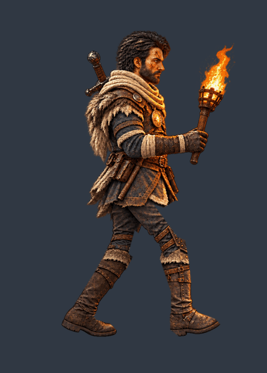
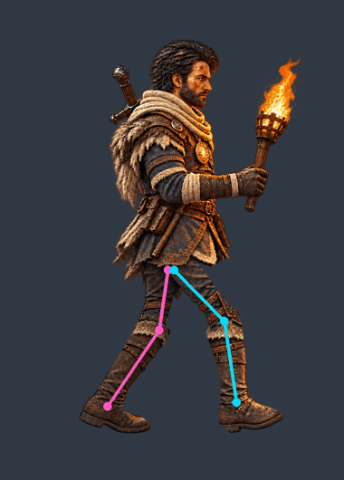
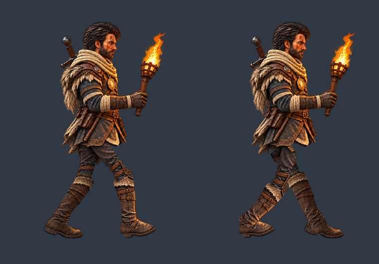
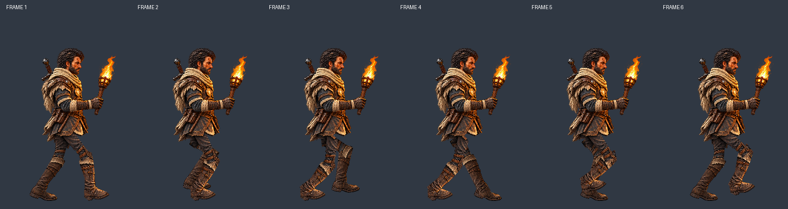

DRAFT: seis fases com alternância controlada. Revisar emendas no quadril, joelhos e tornozelos, aparência das partes ocultas e continuidade do loop. Tronco e tocha fixos neste piloto.




Tira1536×384 · Juntas e máscaras · Auditoria